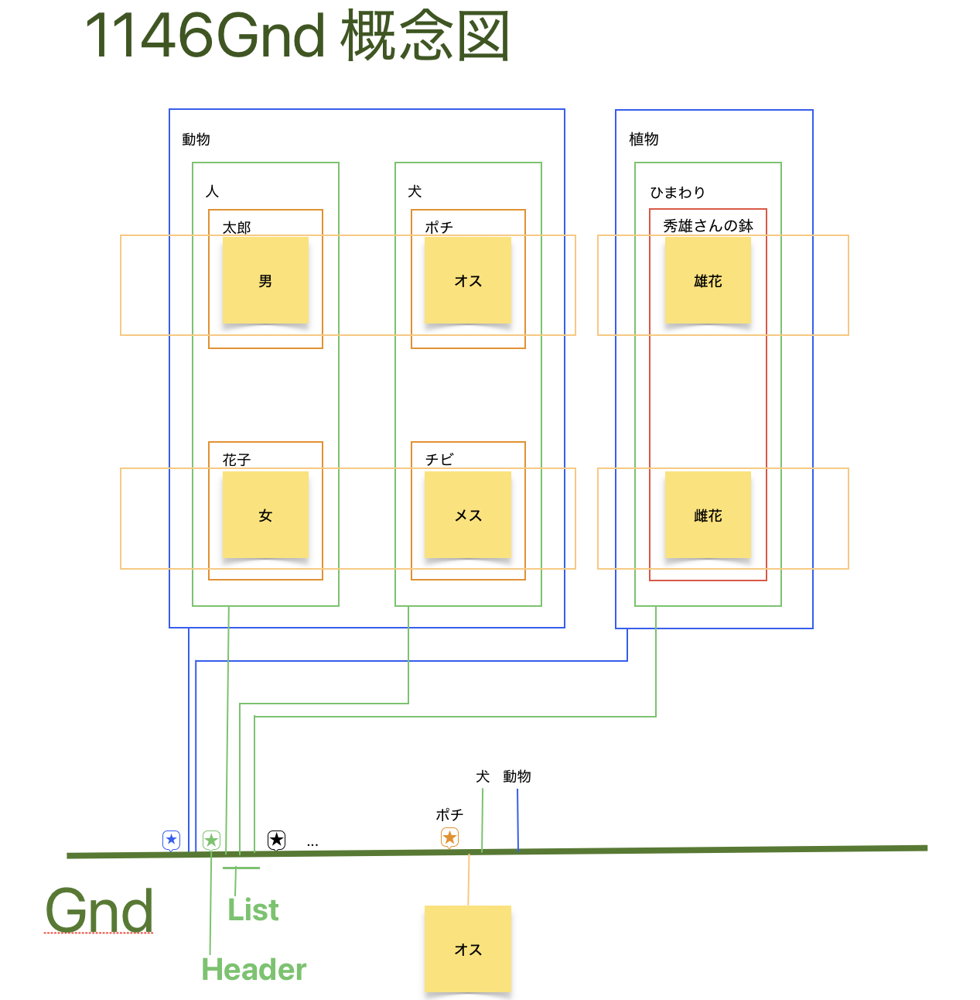
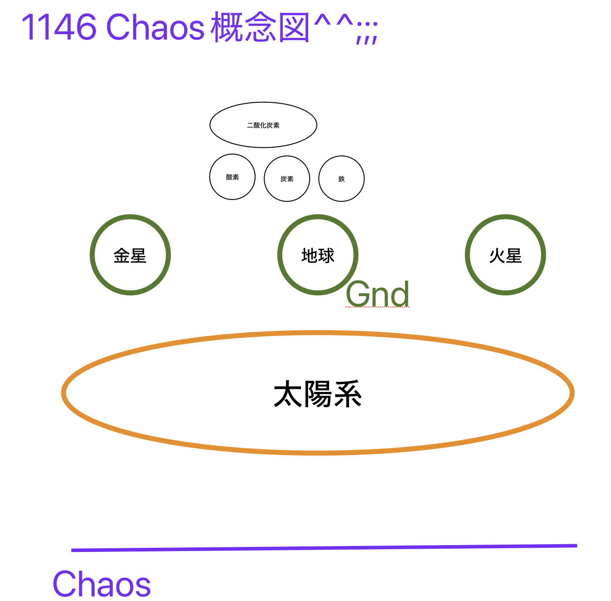
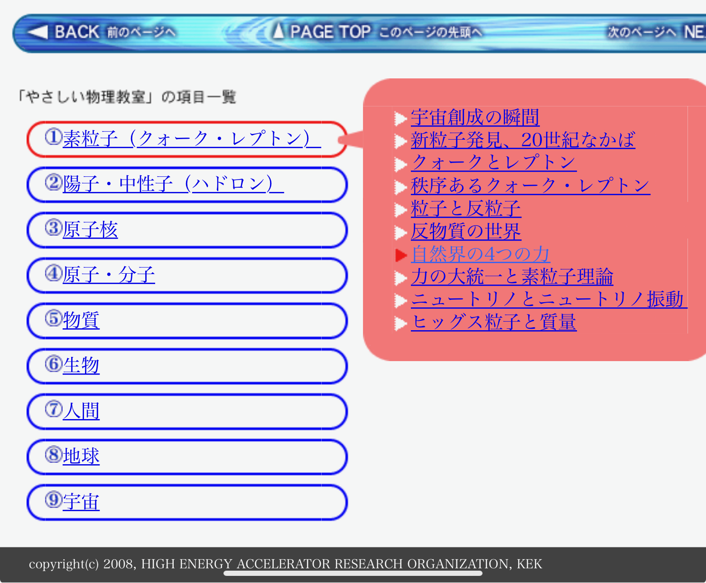

1146Gnd Lang/Chart/Asm
(Iijiro Ground Language/Chart/Assembler)
「パワポが動け!」プロジェクト
- パワーポッターの生成物をソースコードに落とせない(涙)
- 矛盾の無い仕様書
- 動作チェックができる
- 何ならそのままリリース可能
- →1146Gnd Lang/Chart/Asm
ソースコードのコメントに図を!
- 図のレイヤーを設ける？
- xxxの説明レイヤーを選べる？
- ソースコードの回り込み
- グラフ用リストの描画
- 画像のコピペ、編集、簡易パワポ
- いや、図にソースコードを書き込んだほうが良くね？
- →1146Gnd Lang/Chart/Asm
1146Gnd 概念図

1146Gnd Lang
- 昔は16bitアドレス空間(64KiB:0x0000-0xffff)にラベルだった。
- これを、最新？現代？の個人向け計算機の能力をぶん回せることを前提に、拡張する。
- 全てのオブジェクト？ノード？(仮にNodeと表記)は、アドレス空間(Gnd)に並び、Gndに対して等価。
- オブジェクト指向の参照的な機能を活用し、同じ意味のソースコードは書かないで済むようにする。
- プロパティ？Nodeがある。(boolより賢い何か^^;;;)(これをリッチにリッチに用意する！)
- オブジェクト指向のフィールド変数？Node(仮に変数Node)がある。
- Nodeを束ねるNodeがある。
- プロパティNodeや変数Nodeはインスタンス化(新たにNodeとしてGndに並べる)して使用する。
- (てか、プロパティNodeや変数Nodeは型の定義になるんか？)
- ソースコードのNodeは、処理後、次にどのNodeを実行するか決める。
- →プログラムカウンター？実行中のNodeのアドレス？の自動インクリメントはなし。
- ソースコードのNodeのソースコード？マクロ？は上から順番に処理される。
- Node?にアクセス権限。グループ/個別...とか。「隠蔽」みたいなことをやれるように。
- (まずは、json format???)
- ...
1146Gnd Chart (GUI Programming)
- Nodeとそれを結ぶ線(Link)
- SafariとiPad mini(第5世代)とApple Pencil(第1世代)
- SafariとiPad mini(A17pro:第7世代)とApple Pencil Pro
- PythonとDjangoとVue.jsでAjax。SVG描画
- Webアプリとしてデブロイ？
- (技術的には可能です...知らんけど^^;;;)
- 雰囲気出来てきたら、RustとWebAsmへ移行...。
- (技術的には可能です...知らんけど^^;;;)
- (WebSocket...知らんけど^^;;;)
- (マイコンにデブロイ？)
- (FPGAにデブロイ？)
- (技術的には可能です...知らんけど^^;;;)
- (デブロイはアップロードを含むようなので、別の言葉を探さないと...)
- NodeにテストマクロNode
- ダミー(API/HardWear/...)モジュールNode
- 1146Gnd Lang Chart GUI、1146Gnd Lang ソースコード(無理かな...)、清書、説明書込み、を、同期する何か...知らんけど^^;;;
- グラフ、図(SVG出力?)、も同期、というか描画。
- グラフ、図、は、アニメーション？スタート/ストップボタン？
- 清書: プレゼン用。GUIアプリ(Webアプリ)。などなど...。
- 無限undo/redo。操作ツリー。
- gitのカスタマイズ的何か...知らんけど^^;;;
- ソースコードは、VSCode拡張機能を作らず、Python(Rust!!??)の拡張機能で見やすいようにする。
- (まずは、json format???)
- プロパティを指定したり、追加したり、して、新たなNodeが作れる。
- プロパティにより動的にNodeを有効/無効にすることもできる。
- 少なくとも、プロパティNodeは、存在する/しない、値未設定/値あり、の２つのフラグをもつ。
- ...
1146Gnd Asm
- Address:Type-Data
- Header
- List(Typeにより、Headerも混在可能にする)
- (1146Gnd Lang)
- (1146Gnd Chart)
- Chartの情報。座標。図形情報、テキスト情報、Link情報
- ...
番外編 1146Chaos 概念図

- カオス(混沌)...てか、秩序(System?)？？？？
- 
- キッズサイエンス
- ...
20241121-0700 更新 1146gnd ---> 1146Gnd, add 1146Gnd Asm, ect
20241016-0710 更新ってか初稿 by コピペ二スト:飯城1146三郎(1146cho326)(IIJRO cho Saburo)
20250515-1755 "The Device" 公開 ---> 画面解析型 自動操作機器